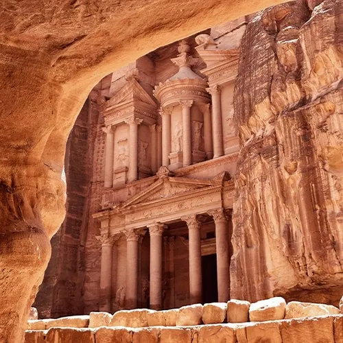

Petra, Jordan
Constructed: c. 5th century BCE
Carved directly into rose-colored sandstone cliffs, Petra was the secret capital of the Nabataeans, an ancient trading people who controlled the routes for frankincense, myrrh, and spices across the desert. They built a complex water system of hidden channels and cisterns that let a city thrive in the middle of arid rock. Petra stayed lost to the Western world for centuries until a Swiss explorer, disguised as a local traveler, rediscovered it in 1812. Its most famous facade, the Treasury, took skilled masons years to carve from the top down.
Type: Rock‑Cut Architecture / Nabataean Civilization